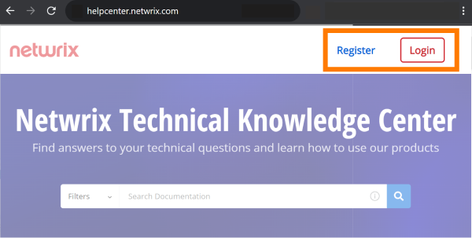

Overview
The Help Center is a comprehensive resource to answer your questions and navigate through any troubleshooting challenges related to Netwrix products.
Find Exactly What You Are Looking For
You can search for a guide on a specific topic by using the search box (find it in any Help Center page), and filtering your search results.
Have It Your Way
We try to organize our documentation in a way that makes sense to everyone. But you may have different needs. To create and manage your own knowledge base, add KB articles to My Topics.
Help us improve contents by providing feedback via the form which is available on every KB article page.
How to Find a Knowledge Base Article
IMPORTANT: It is highly recommended to register and login to the Help Center in order to get access to all the content. Check these options in the top-right corner:

-
Select the Knowledge base filter. To do this, use one of the following options:
-
Open a search page with the selected Knowledge Base filter or
-
Go to helpcenter.netwrix.com and click on the Filters dropdown near the search pane. Then select Knowledge Base from the Sources category.
-
-
Select a product name from the Netwrix Product category.
TIP: Don’t apply filters referred to Content Type category. These filters relate to documentation articles only. Learn more about the difference between documentation articles and KB articles below.
-
Write required key words or a phrase which helps to find an article.
Example: 401 error or how to omit account
-
Press Enter or click the search icon.
KB Article vs Documentation Article
Netwrix Help Center contains both product documentation (explains how products work) and KB articles (help to solve problems) for all Netwrix products.
A KB article:
-
Has the following URL: <https://helpcenter.netwrix.com/bundle/z-kb-articles-salesforce/page/...>
-
Is unstructured. There is no table of contents for KB articles. To find a KB, use the search pane and filters.
A Documentation article:
-
Has the following URL: <https://helpcenter.netwrix.com/bundle/<product name>/page/Content/...>
-
Is structured. You may find its position in the table of contents placed on the left pane.